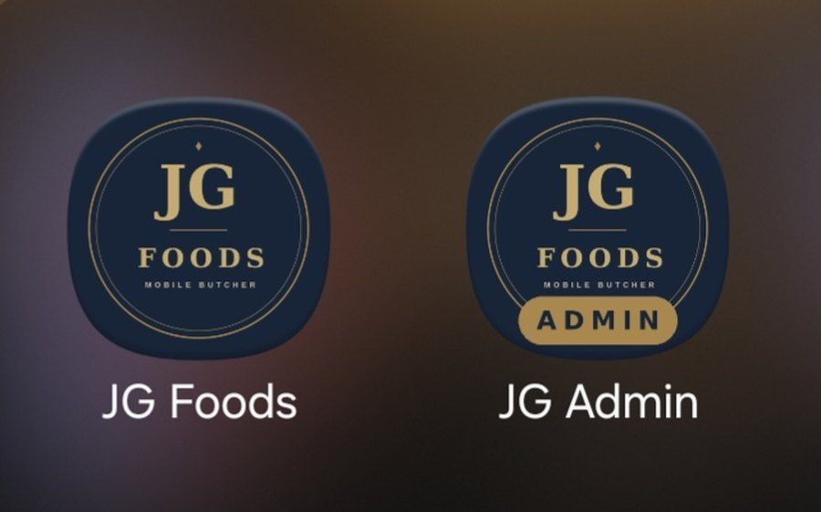
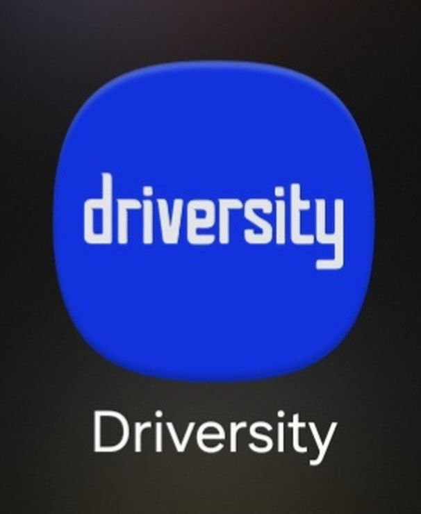

What we do
We build two things that work together — a website your customers interact with, and an app you run the business from. Both tailor-made, both with AI woven through them.
What we build
Not a template, not a WordPress theme. A website built specifically for how your business presents itself and how your customers interact with it. Whether that's a brochure site, a product catalogue, an ordering system, or a booking flow — designed for your audience, your brand, and your goals.
The system behind the scenes that makes your business run properly. Order management, customer records, delivery scheduling, invoicing, staff management — built around how you actually work, not how a generic SaaS product thinks you should. One place for everything, accessible from any device.
Every AXRIK build installs on phones and tablets like a real app: its own icon on the home screen, opening full-screen with no browser bar. That goes for your customer website and your business management app — and every update we deploy appears instantly, with no app store, no downloads and no update prompts.
Practical AI built into your system from day one. Not a chatbot on your homepage — AI that does real work: drafting communications, generating reports, forecasting demand, parsing orders from social media, flagging problems before they become one. Designed around your specific workflows.
Most software waits for you to tell it what to do. With the right setup, yours doesn't have to. We build automated workflows that run on their own — sending your driver's picking list every Monday morning, emailing customers the moment they order, chasing overdue invoices before you've even noticed them. You set it up once. It runs every day without you.
We don't build and disappear. As your business grows, your system grows with it. New features, new staff, new delivery areas, new products — we're there to add them. You own the system; we keep it sharp.
Apps without the app store
A native iPhone-and-Android app used to mean serious app-store development money. Not any more. Every system AXRIK builds — the website your customers use and the management app that runs your business — installs on any phone, tablet or computer like a real app, included in the build as standard.
A native app, built the old way
Roughly €35,000–€175,000 to build for iPhone and Android — plus yearly maintenance and app-store fees. Industry estimates.
The AXRIK way
The same "tap the icon, opens full-screen" app experience, built into every AXRIK site and management app — for a fraction of native-app money.
Tap the icon on your home screen and your system opens like any other app — no browser bar, no typing addresses. Your staff open "your app", not "a website".
Android, iPhone, iPad, laptop — the same system installs everywhere your team works, from the delivery van to the office.
There's no app store in the middle. The moment we improve your system, every installed app is already up to date — nothing to download, nothing to approve.
This isn't an add-on with a price tag. Every AXRIK website and business management app ships install-ready as standard.
See it on a real phone


Cost figures are industry estimates for bespoke native app development across iOS and Android, converted to GBP/EUR. Actual native-app costs vary by complexity; the point is simply that an installable AXRIK build delivers the app experience without that outlay.
AI that earns its place
Every small business we talk to is curious about AI but unsure where it actually fits. The honest answer is: it fits exactly where you're currently doing something repetitive, time-consuming or easy to get wrong.
We identify those moments in your specific workflow and design the AI around them — so it's not a feature you have to learn, it's just the system doing what it should. And in many cases, it doesn't wait for you to ask. It runs on a schedule, reacts to events, and gets things done while you're out running your business.
How we think about it
We don't add a general-purpose AI assistant and call it done. We identify the exact tasks in your workflow that AI can improve and build around those.
Your business data doesn't train anyone else's AI. Everything is built on infrastructure you control, with proper data handling from day one.
The more your system is used, the more useful the AI becomes. It learns your patterns, your customers, your products — and surfaces better insights over time.
Who we work with
We work across sectors. The business type matters less than the problem — if you're managing customers, orders, bookings, deliveries, or a team and you need a system that actually fits how you work, we can help.
The process
We talk through your business properly. How it runs today, where the friction is, what you'd change if you could. No form to fill in — a real conversation that gives us everything we need to start building.
Before we commit to anything, we build a clickable prototype of your system. You see the real experience — how your customers will use it, how you'll manage it — before a single line of production code is written.
We build in stages — foundation first, then features. You see value early. Each phase is usable as soon as it's done. No waiting six months for a "big reveal" that might not be right.
Once live, we stay with you. New features as your business grows, fixes when something needs attention, and a team that already knows how your system works — so changes are fast and nothing breaks.
How we work with you
Every AXRIK client gets a private portal — your own login, your own project page. From the moment we start, you can see exactly where your build is at and what's coming next.
No chasing emails asking "how's it going?" Your portal is updated throughout the build, so you always know what's been done, what's in progress, and what we need from you.